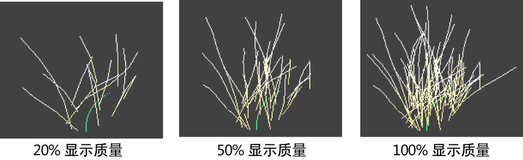

处于线框模式时，“Paint Effects”会对笔划提供一种线框表示形式。通过更改笔划显示质量，可以设定线框表示形式与渲染笔划外观的类似程度。显示质量范围是 0 到 100%，默认显示质量为 100%。显示质量越低，Maya 的执行速度越快。

可以控制在降低显示质量时显示质量将受到何种影响。简化线框显示（将显示质量设定为小于 100%）时，可以减少每步管数和/或分段数。默认简化方法是将每步管数和分段数都减少。
例如，如果对树进行笔划绘制，减少每步管数将可以减少沿路径的树木数，减少分段数则可减少每棵树的细节，将每步管数和分段数都减少则可同时减少树木数和每棵树的细节。
修改现有笔划的显示质量
- 选择笔划。
- [可选] 在笔划笔刷节点的部分中，选择简化笔划的线框表示形式所要使用的方法。默认为“管”(Tubes)和“分段”(Segments)。有关详细信息，请参见创建笔刷设置中的“简化方法”(Simplify Method)。
- 执行下列操作之一：
- 在“通道盒”(Channel Box)中，单击笔划形状并更改“显示百分比”(Display Percent)。
- 在“属性编辑器”(Attribute Editor)中，单击 strokeShape 选项卡并更改“显示质量”(Display Quality)。
- 选择并选择显示百分比，或选择“自定义”(Custom)。
修改下一个笔划的显示质量
- 选择
 。“工具设置”(Tool Settings)窗口打开。
。“工具设置”(Tool Settings)窗口打开。
- 在“显示质量”(Display Quality)框中设定显示质量。绘制的下一个笔划将以该设置的显示质量显示。